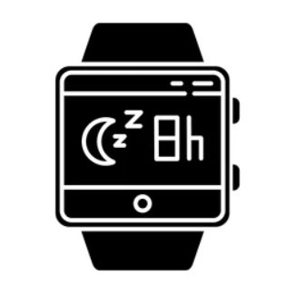

Step Counter and Distance Tracker
Achieve your daily fitness goals with precision. The Turet Sports Plus Smart Watch counts your steps and tracks the distance covered, keeping you motivated throughout the day.

Heart Rate Monitoring
Optimize your workouts with real-time heart rate monitoring. Ensure you're in the ideal heart rate zone for your fitness goals and track your resting heart rate for a comprehensive view of your cardiovascular health.

Design Tailored for Women
Unleash your style with a fitness band designed exclusively for women. The Turet Sports Plus combines functionality with elegance, ensuring you look fabulous on every occasion.

Sleep Analysis for Well-Being
Prioritize your well-being with detailed sleep analysis. Understand your sleep patterns, improve your rest, and wake up feeling refreshed and ready to conquer the day.
Smart Notifications on Your Wrist
Stay connected without interruption. Receive call, text, and app notifications directly on your Turet Sports Plus Smart Watch—your ultimate companion for a connected and active lifestyle.
Calorie Tracker
Monitor and manage your calorie expenditure with the Calorie Tracker. Whether you're working out or going about your daily activities, this feature provides an estimate of the calories burned, supporting your fitness and weight management goals.